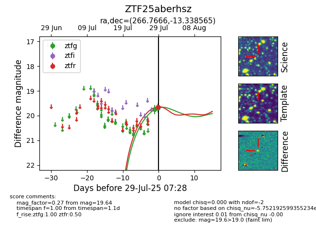

Target ZTF25aberhsz at 2025-07-29 07:28, see:
FINK: fink-portal.org/ZTF25aberhsz
Lasair: lasair-ztf.lsst.ac.uk/objects/ZTF25aberhsz
ALeRCE: alerce.online/object/ZTF25aberhsz
alt names
ZTF25aberhsz (ztf,fink)
coordinates:
equatorial (ra, dec) = (266.7666,-13.33857)
galactic (l, b) = (13.5819,+7.74982)
photometry
last ztfg=19.69, ztfr=19.64
2 ztfg, 1 ztfr detections
